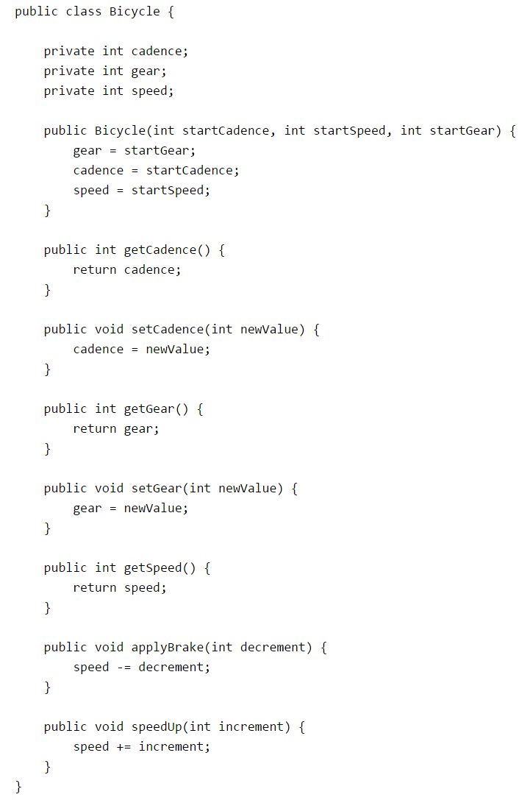
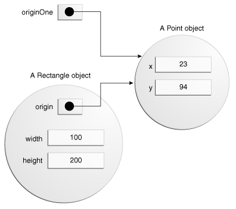

Return to Readings
02-Classes and Objects
1. Benefits of Object-Oriented implementation
- The important features of the OO paradigm.
- Encapsulation
- Inheritance
Encapsulation
- Data members:
- describe instances of that class
- private accessibility
- all behavior should be accessed only via methods (ensure that the nature of those variables is irrelevant outside the object).
Why need Encapsulation?
- Make code that is more reliable and robust.
- Re-use:
- composition (“has a” relation)
- or inheritance (“is a” relation)
2. Coupling and Cohesion
- The terms “coupling” and “cohesion” describe two related qualities of object-oriented programs.
Coupling
- Coupling is an object’s reliance on knowledge of the internals of another entity’s implementation.
- When object A is tightly coupled to object B, a programmer who wants to use or modify A is required to have an inappropriately extensive expertise in how to use B.
Cohesion
Cohesion is the degree to which a class or method resists being broken down into smaller pieces.
Study the Telescope class
…
- The aiming and focusing methods might call each other, but they wouldn’t call the image-processing methods or access the image-processing data
- So a class like Telescope that can easily be split into distinct elements probably models not one but two (or more!) real-world objects.
In the real world, you'll often find many individual objects all of the same kind. There may be thousands of other bicycles in existence, all of the same make and model. Each bicycle was built from the same set of blueprints and therefore contains the same components. In object-oriented terms, we say that your bicycle is an instance of the class of objects known as bicycles. A class is the blueprint from which individual objects are created.
In general, class declarations can include these components, in order:
- Modifiers such as public, private, and a number of others that you will encounter later.
- The class name, with the initial letter capitalized by convention.
- The name of the class's parent (superclass), if any, preceded by the keyword extends. A class can only extend (subclass) one parent.
- A comma-separated list of interfaces implemented by the class, if any, preceded by the keyword implements. A class can implement more than one interface.
- The class body, surrounded by braces, {}.

Members of a class
3.1. Declaring Member Variables
There are several kinds of variables:
- Member variables in a class—these are called fields.
- Variables in a method or block of code—these are called local variables.
- Variables in method declarations—these are called parameters.
The Bicycle class uses the following lines of code to define its fields:
public int cadence; public int gear; public int speed;
Field declarations are composed of three components, in order:
- Zero or more modifiers, such as public or private.
- The field's type.
- The field's name.
The fields of Bicycle are named cadence, gear, and speed and are all of data type integer (int). The public keyword identifies these fields as public members, accessible by any object that can access the class.
Access Modifiers
The first (left-most) modifier used lets you control what other classes have access to a member field. For the moment, consider only public and private. Other access modifiers will be discussed later.
- public modifier—the field is accessible from all classes.
- private modifier—the field is accessible only within its own class.
3.2. Defining Methods
Here is an example of a typical method declaration:
public double calculateAnswer(double wingSpan, int numberOfEngines,double length, double grossTons) {
//do the calculation here
}
Naming a Method
Although a method name can be any legal identifier, code conventions restrict method names. By convention, method names should be a verb in lowercase or a multi-word name that begins with a verb in lowercase, followed by adjectives, nouns, etc. In multi-word names, the first letter of each of the second and following words should be capitalized. Here are some examples:
run
runFast
getBackground
getFinalData
3.3. Providing Constructors for Your Classes
A class contains constructors that are invoked to create objects from the class blueprint. Constructor declarations look like method declarations—except that they use the name of the class and have no return type. For example, Bicycle has one constructor:
public Bicycle(int startCadence, int startSpeed, int startGear) {
gear = startGear;
cadence = startCadence;
speed = startSpeed;
}
To create a new Bicycle object called myBike, a constructor is called by the new operator:
Bicycle myBike = new Bicycle(30, 0, 8);
new Bicycle(30, 0, 8) creates space in memory for the object and initializes its fields.
Although Bicycle only has one constructor, it could have others, including a no-argument constructor:
public Bicycle() { gear = 1; cadence = 10; speed = 0; }
Bicycle yourBike = new Bicycle(); invokes the no-argument constructor to create a new Bicycle object called yourBike.
4. Object
Aclass provides the blueprint for objects; you create an object from a class. Each of the following statements taken from the CreateObjectDemo program creates an object and assigns it to a variable:
Point originOne = new Point(23, 94); Rectangle rectOne = new Rectangle(originOne, 100, 200); Rectangle rectTwo = new Rectangle(50, 100);
The first line creates an object of the Point class, and the second and third lines each create an object of the Rectangle class.
Each of these statements has three parts (discussed in detail below):
- Declaration: The code set in bold are all variable declarations that associate a variable name with an object type.
- Instantiation: The new keyword is a Java operator that creates the object.
- Initialization: The new operator is followed by a call to a constructor, which initializes the new object.
public class Point {
public int x = 0;
public int y = 0;
//constructor
public Point(int a, int b) {
x = a;
y = b;
}
}
This class contains a single constructor. You can recognize a constructor because its declaration uses the same name as the class and it has no return type. The constructor in the Point class takes two integer arguments, as declared by the code (int a, int b). The following statement provides 23 and 94 as values for those arguments:
Point originOne = new Point(23, 94);

Rectangle rectOne = new Rectangle(originOne, 100, 200);
This calls one of Rectangle's constructors that initializes origin to originOne. Also, the constructor sets width to 100 and height to 200. Now there are two references to the same Point object—an object can have multiple references to it, as shown in the next figure:

5.1. Referencing an Object's Fields
For example, we can add a statement within the Rectangle class that prints the width and height:
System.out.println("Width and height are: " + width + ", " + height);
In this case, width and height are simple names.
Code that is outside the object's class must use an object reference or expression, followed by the dot (.) operator, followed by a simple field name, as in:
objectReference.fieldName
5.2. Calling an Object's Methods
You also use an object reference to invoke an object's method. You append the method's simple name to the object reference, with an intervening dot operator (.). A
objectReference.methodName(argumentList);
or:
objectReference.methodName();
The Rectangle class has two methods: getArea() to compute the rectangle's area and move() to change the rectangle's origin. Here's the CreateObjectDemo code that invokes these two methods:
System.out.println("Area of rectOne: " + rectOne.getArea()); ... rectTwo.move(40, 72);
The first statement invokes rectOne's getArea() method and displays the results. The second line moves rectTwo because the move() method assigns new values to the object's origin.x and origin.y.
As with instance fields, objectReference must be a reference to an object. You can use a variable name, but you also can use any expression that returns an object reference. The new operator returns an object reference, so you can use the value returned from new to invoke a new object's methods:
new Rectangle(100, 50).getArea()
The expression new Rectangle(100, 50) returns an object reference that refers to a Rectangle object. As shown, you can use the dot notation to invoke the new Rectangle's getArea() method to compute the area of the new rectangle.